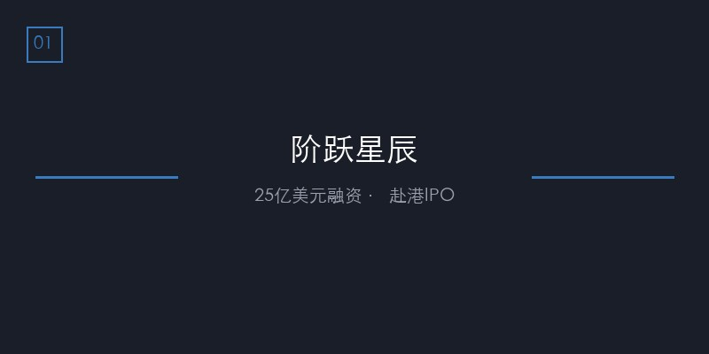
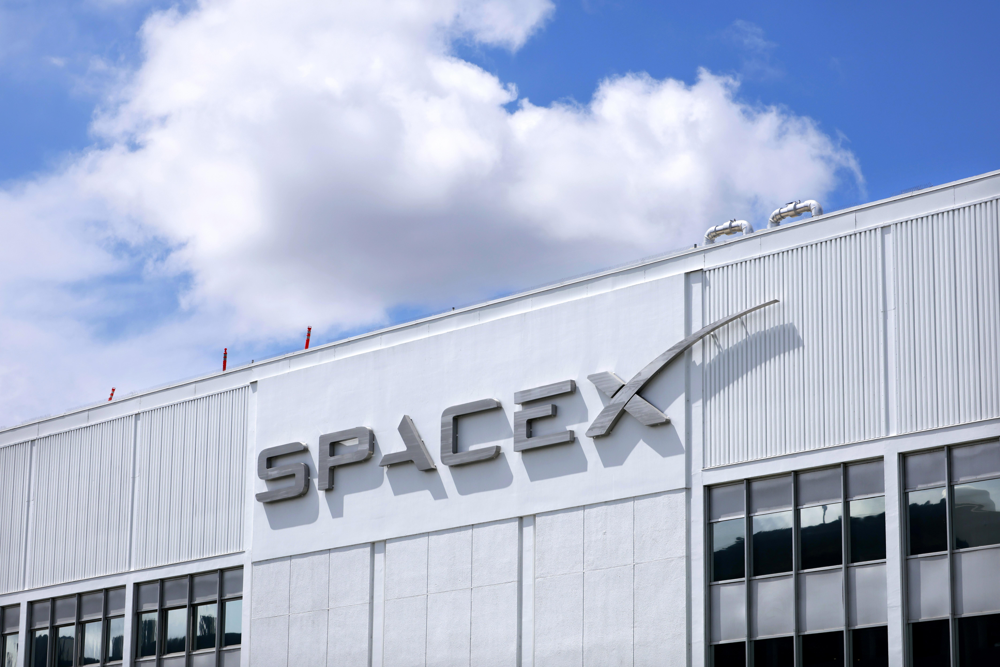
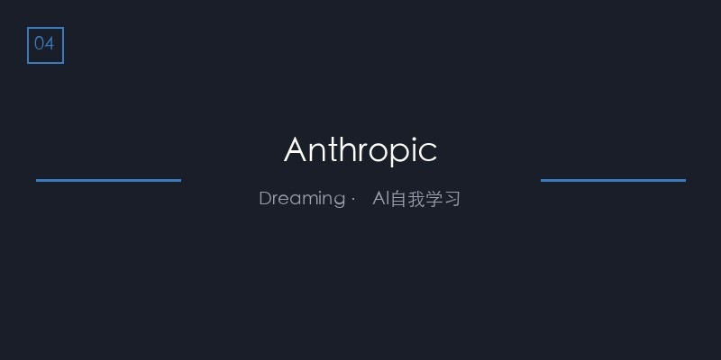
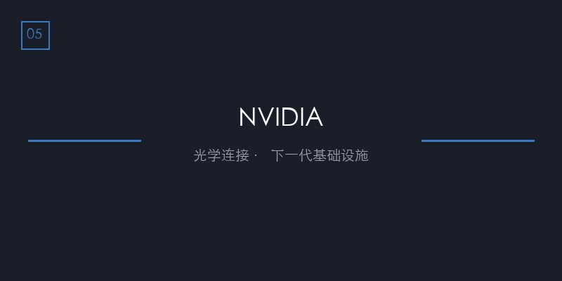
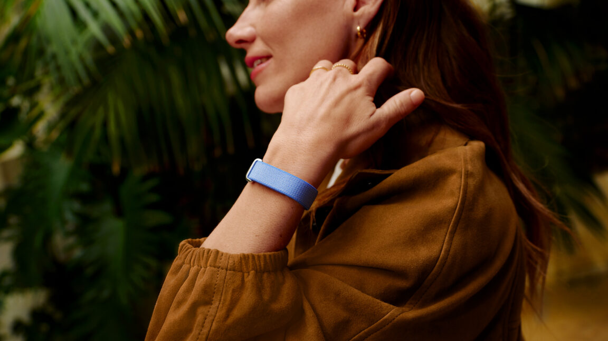
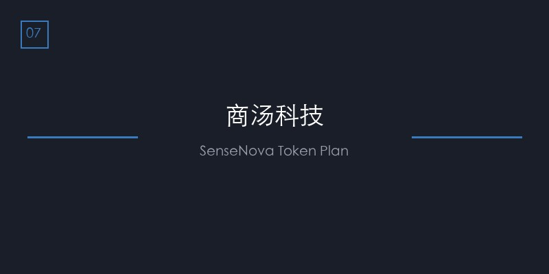
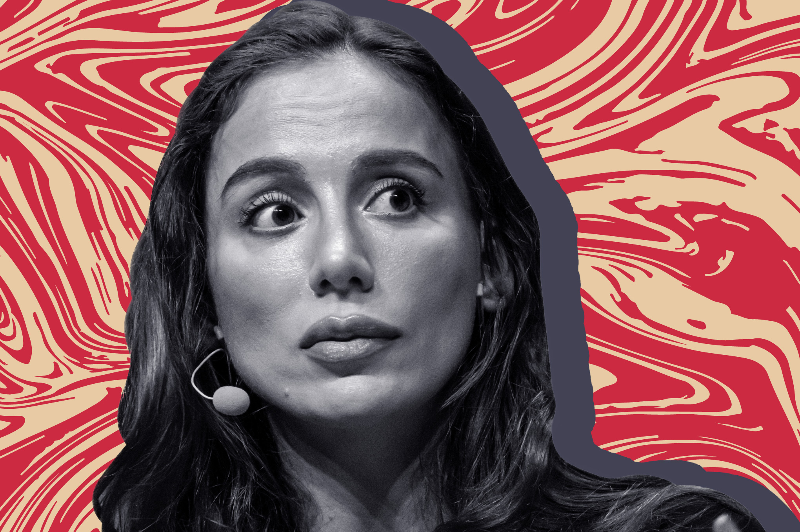
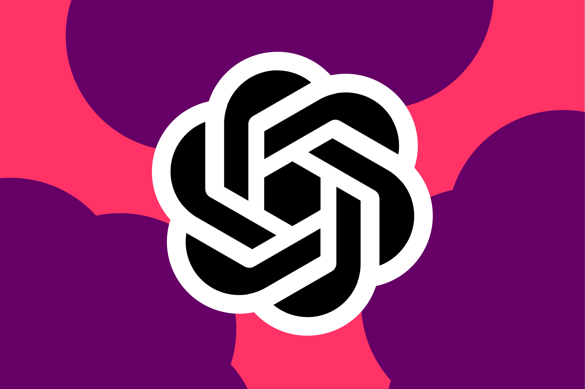

AI DAILY
AI 行业日报
05月08日 · 精选 10 条
01融资
阶跃星辰将完成近25亿美元融资，拆除红筹架构赴港IPO

国产大模型公司阶跃星辰将完成近25亿美元融资，投资方包括华勤、龙旗、豪威、中兴等产业链资本，香港投资管理有限公司（HKIC）也出现在股东名单中。
公司已拆除红筹架构，加速赴港IPO准备。这是继月之暗面、MiniMax之后，又一家走向资本市场的国产大模型公司。
INSIGHT
产业链资本入场说明大模型公司的价值正在被硬件厂商认可——不是买技术，是锁供应链。但25亿够烧多久？一位AI投资人说，训练一次 frontier model 的成本已经逼近10亿。
02基础设施
SpaceX计划投资550亿美元在得州建造AI芯片工厂

SpaceX计划向得州奥斯汀的"Terafab"芯片工厂投资至少550亿美元，这是马斯克进军AI芯片制造领域的标志性动作。
项目细节已在公开听证会文件中披露。如果落实，这将是美国本土最大规模的AI芯片制造投资之一，直接对标台积电亚利桑那工厂。
INSIGHT
550亿不是建厂，是买"独立"——马斯克不想被英伟达卡脖子。但芯片制造从奠基到量产通常要3-5年，那时候的技术节点可能已经换了两代。
03产品
GPT-5语音对话上线，OpenAI终于"说人话"
OpenAI正式上线GPT-5语音对话功能，支持自然语音交互，语调、停顿更接近真人对话，不再是机械的"语音播报"模式。
该功能基于新的语音合成模型，支持多轮对话中的上下文理解和情感适配。目前面向ChatGPT Plus用户逐步开放。
INSIGHT
语音是AI的"最后一公里"——文本交互的门槛还在，但说话是本能。一位产品经理朋友说，他们内部测试时最大的感受是"终于不用打字了"。
04技术
Anthropic推出"Dreaming"，让AI Agent能从错误中学习

Anthropic在Code with Claude大会上发布"Dreaming"系统，让AI Agent能从过往会话中自主学习并持续改进，类似人类的"反思"机制。
这是Claude Managed Agents平台的重要升级。此前Agent每次会话都是"从零开始"，Dreaming让Agent拥有了跨会话记忆。
INSIGHT
跨会话记忆是Agent从"工具"变"助手"的分水岭。但一个问题：Agent记错了怎么办？一个错误的"学习"会被反复强化，这比不学习更麻烦。
05硬件
黄仁勋：下一代AI基础设施需要光学连接，铜线已不够

英伟达CEO黄仁勋表示，下一代AI基础设施将需要大量光学连接，因为计算需求增长太快，铜线已无法满足带宽需求。
英伟达与康宁公司合作推进光学技术规模化应用。黄仁勋称："我们将以前所未有的规模扩大光学技术应用，坦率地说，没有哪家光学公司曾有过这样的规模。"
INSIGHT
铜→光，是数据中心架构的根本性转变。一家光通信公司的朋友说，他们今年的订单量已经排到了明年Q2——这不是趋势，是订单驱动的现实。
06产品
Google发布无屏Fitbit Air和Google Health应用

Google发布Fitbit Air，一款无屏幕健身追踪器，定价约100美元，直接对标Whoop。同时宣布将Fitbit应用更名为Google Health。
Fitbit Air支持24小时心率监测、房颤预警、血氧、睡眠分期等功能，由Gemini AI驱动健康建议。原有的Google Fit应用将在年底关闭。
INSIGHT
Google在健康领域的策略很清晰：用硬件采集数据，用AI分析数据，用服务变现数据。但Fitbit的品牌忠诚度已经不高了——用户要的是数据互通，不是又一个封闭生态。
07模型
商汤发布日日新SenseNova Token Plan

商汤发布日日新SenseNova Token Plan，支持包括SenseNova 6.7 Flash-Lite、SenseNova U1 Fast在内的全系模型，并开启限时免费活动。
SenseNova 6.7 Flash-Lite是新一代轻量化多模态智能体模型，U1 Fast则是原生理解生成统一多模态模型。商汤试图以Token计价模式降低开发者使用门槛。
INSIGHT
Token Plan的本质是"用量换市场"——免费期过了之后，能不能留住用户取决于模型质量。一位开发者说，国内模型的API稳定性仍是最大痛点，比价格更重要。
08AI视频
Vidu Claw开启"百元出百万级大片"时代
Vidu Claw推出"聊着天就把视频做了"的功能，用户用自然语言描述即可生成高质量视频内容，成本控制在百元级别。
该产品背靠国内最大ComfyUI生态，支持从创意到成品的全流程。在AI视频生成赛道，字节Seedance和快手可灵的迭代速度正在催生大量"套壳"应用机会。
INSIGHT
AI视频赛道正在经历"模型能力溢出"——大厂卷模型质量，创业者卷应用场景。但一位投资人提醒：套壳产品的护城河太薄，模型厂商一个功能更新就能覆盖。
09诉讼
Musk v. Altman法庭大战：OpenAI创始人之争进入关键阶段

Mira Murati的证词揭示了Sam Altman被罢免事件的更多细节，包括微软高管在2018年对OpenAI的"既怀疑又警惕"态度。
马斯克指控OpenAI背离"造福人类"初心转向盈利。庭审显示，马斯克曾试图在特斯拉内部成立AI部门，并邀请OpenAI创始人加入，条件是获得控制权。
INSIGHT
这场官司的本质不是"开源vs闭源"，是"谁控制AI"。一位律师朋友说，无论判决结果如何，最大的赢家是律师——双方已经为此支付了超过5000万美元的诉讼费用。
10安全
ChatGPT上线"Trusted Contact"安全功能

OpenAI推出可选安全功能"Trusted Contact"，允许成年用户指定紧急联系人。当系统检测到用户可能讨论自伤等安全话题时，将通知该联系人。
该功能目前仅限美国部分用户测试。OpenAI强调这是一项可选功能，需要用户主动开启，且会明确告知用户何时触发通知机制。
INSIGHT
AI安全从"内容过滤"进化到"主动干预"，这是质的跨越。但隐私边界在哪里？一位心理学研究者说，这相当于在 therapy session 里装了一个"紧急按钮"——有用，但也让人不敢说实话。
由 Zayen知览 整理 · 构建者视角